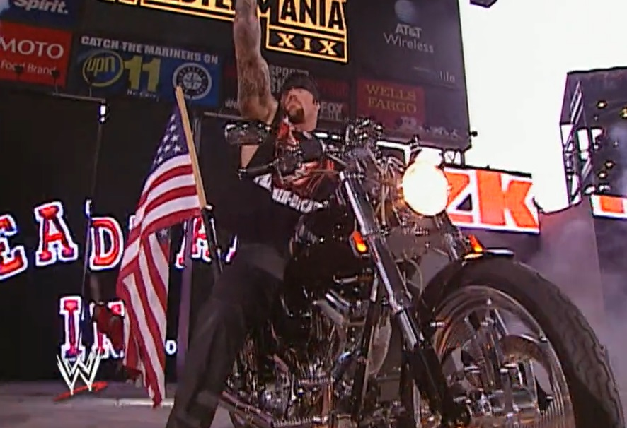

How It Came to Be

This genre took inspiration from Groove Metal and added electronic components to it, hence the industrial part of its name. There are some bands that are not necessarily metal, but only industrial, which is a separate genre in itself. Famous bands include Rammstein, Nine Inch Nails, and Marilyn Manson, although Fear Factory was the one that began the genre.
Clothes Worn & Culture

Although this genre does not have a specific look, it is known for being highly theatrical. The sounds are dramatic, and performances often incorporate extensive pyrotechnics and elaborate props. For example, the band Rammstein frequently draws inspiration from plays they watched growing up, infusing those elements into their concert theatrics.
Fun Facts
A wrestler named The Undertaker used Limp Bizkit's song "Rollin'" as his entrance song for some time during his wrestling matches.
Songs
Click on an image to see the history of one of the metal genres